Unofficial study solution; not an official GTU answer key. Answers have not been independently verified. English text reflows; source equations, diagrams and Gujarati retain their original appearance. Use Enlarge image to inspect them.
આ બિનસત્તાવાર અભ્યાસ ઉકેલ છે, સત્તાવાર GTU જવાબવહી નથી. PDF માંથી ગુજરાતી લખાણ સાચું નીકળતું નથી, તેથી દરેક જવાબ મૂળ ચિત્રરૂપે જાળવ્યો છે. વાંચવા માટે ચિત્ર મોટું કરો. મૂળ પ્રશ્ન અને પરીક્ષાના વિકલ્પોની સૂચનાઓ અનુસરો.
Coverage: all five questions and every printed OR alternative are solved: 28 parts. The authentic English question is retained in both language views; answers are in English and Gujarati.
Printed instructions: attempt all questions; make suitable assumptions; figures on the right indicate full marks; simple and non-programmable scientific calculators are permitted; the English version is authentic.
Important: Winter Q2 OR(c) assumes atmospheric pressure of 760 Torr and gives formal single- phase NPSH values. Its stated tank pressure is below the benzene vapour pressure at 50 °C, so a stable free liquid surface under those conditions is physically inconsistent. See the worked answer.
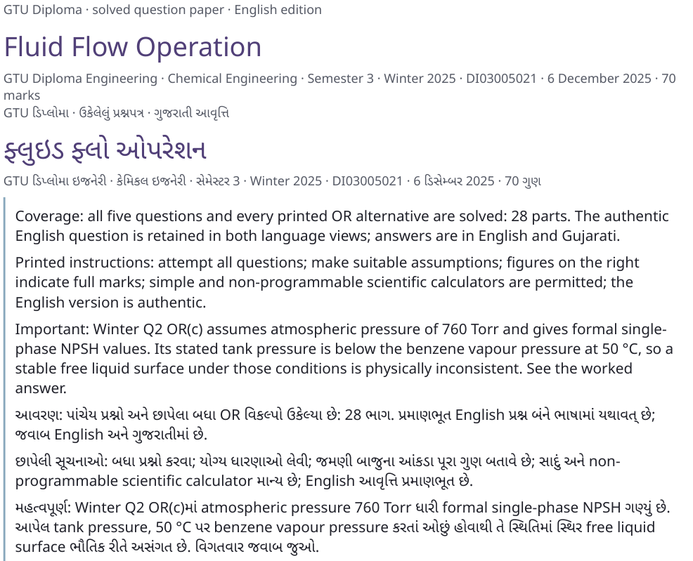
Question 1
Q1 · Gas-moving machines, cavitation, pumps and manometers
Q.1 (a) · Discuss about Fan, Blowers and Compressors. · 3 marks
Fans, blowers and compressors move gases by doing mechanical work on them; they differ mainly in the pressure rise required.
• Fan: small pressure rise for a large gas flow, for example building ventilation.
• Blower: a higher pressure rise than a fan, for example supplying air to a furnace.
• Compressor: much larger pressure rise with appreciable gas-density change, for example plant compressed air.
Pressure ranges and names depend on the standard and equipment; gas compressibility matters when the pressure change is appreciable.
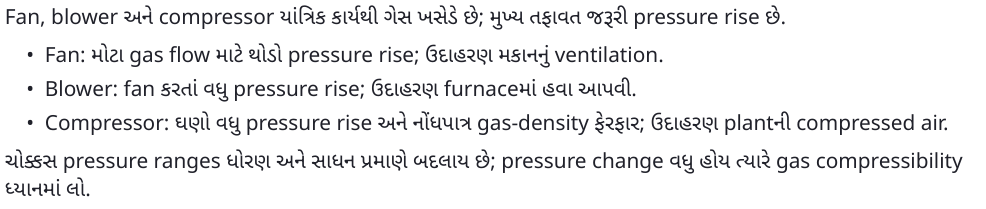
Q.1 (b) · What is cavitation? how it can be prevented? · 4 marks
Cavitation occurs when local absolute liquid pressure falls to or below its vapour pressure and vapour bubbles form; they collapse when carried into a higher-pressure region.
• Collapse causes noise, vibration, pitting of impeller surfaces and loss of head or efficiency.
• Prevention: Maintain adequate available NPSH above the pump’s required NPSH with a suitable margin; raise the liquid level or inlet pressure, shorten and enlarge the suction line, remove blockages, reduce liquid temperature or pump speed.
Example: a hot liquid and a long, restricted suction pipe can make pressure at the impeller eye too low.
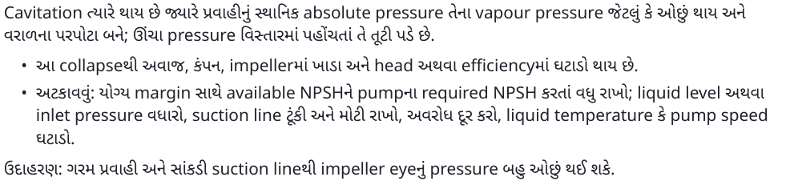
Q.1 (c) · Explain construction and working of centrifugal pump with diagram. · 7 marks
A centrifugal pump is a rotodynamic pump: a rotating impeller gives liquid energy, and the casing converts part of its velocity head into pressure head.
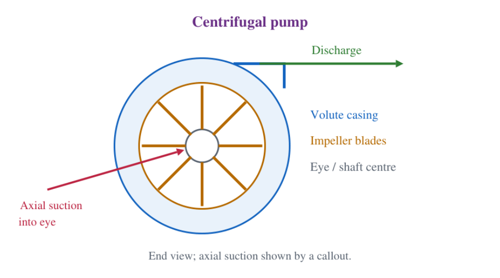
Schematic end view; suction enters axially at the eye and discharge leaves the volute.
Construction — part and purpose
1. An impeller with blades rotates on a shaft inside a close-fitting casing; the eye is the central suction opening.
2. A volute casing collects liquid from the impeller and its generally widening passage helps recover pressure.
3. A suction pipe brings liquid to the eye; a discharge pipe carries it away. Bearings, shaft seal and motor support and drive the rotor. A foot valve and strainer may be fitted on suction.
Working — step and reason
1. Prime the casing and suction line with liquid before starting a conventional non-self-priming pump.
2. Rotation moves liquid from the eye toward the periphery, increasing its velocity and lowering pressure at the eye.
3. Pressure at the liquid source pushes replacement liquid into the eye; the volute slows the discharge and recovers part of its pressure.
4. The continuous discharge supplies the pipeline. Set the operating point from the pump and system curves.
Illustrative hydraulic power (not given in the paper)
Water: ρ = 1000 kg m⁻³; g = 9.81 m s⁻²
Q = 0.010 m³ s⁻¹; pump head H = 10 m
1. Formula — Phyd = ρgQH
2. Substitute — Phyd = 1000 × 9.81 × 0.010 × 10 W
Phyd = 981 W
This is liquid hydraulic power, not motor input; input is larger when efficiency is below 100%. Used for water transfer and circulation. Ensure adequate NPSH and avoid dry running or prolonged shutoff.
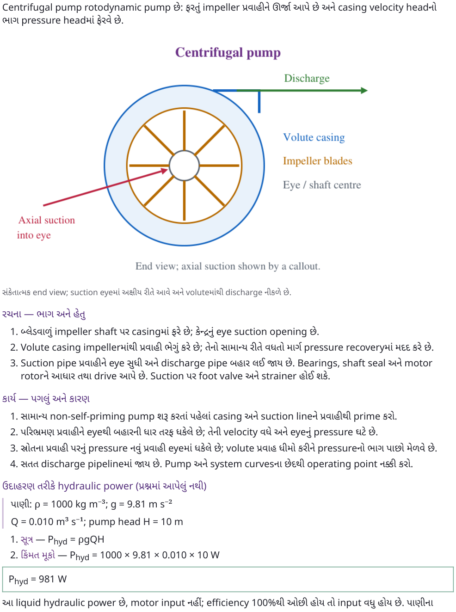

Q.1 (c) · Explain construction and working of Simple U-tube manometer with its equation derivation. · OR · 7 marks
A simple open-end U-tube manometer compares a vessel’s gas pressure with atmospheric pressure by balancing a liquid column.
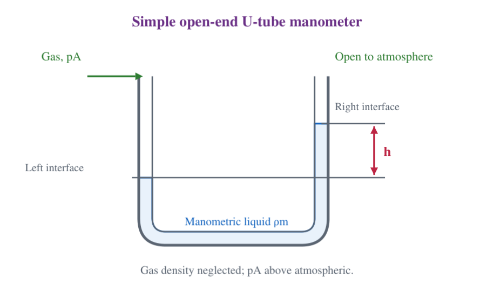
The gas pressure is higher than atmospheric in the case shown; h is the vertical interface difference.
Construction and working
• A transparent U-tube contains a manometric liquid of density ρm. One limb connects to vessel A, the other is open to atmosphere; read the level difference h on a scale.
• Pressure on the gas side pushes its liquid surface down until hydrostatic pressures at the same horizontal level are equal.
Derivation — higher vessel pressure
Assume a static, uniform-density manometric liquid, negligible gas density and no capillary error.
pA and patm use the same absolute-pressure reference.
1. Left interface — Pressure at the left interface = pA 2. Right limb at that level — Pressure at the same level = patm + ρm g h
3. Equal levels in connected liquid — pA = patm + ρm g h
pA − patm = ρm g h
Illustrative reading
ρm = 1000 kg m⁻³; g = 9.81 m s⁻²; h = 0.20 m
1. Substitute — pA − patm = 1000 × 9.81 × 0.20 Pa
Gauge pressure = 1962 Pa = 1.962 kPa
If the vessel pressure is below atmospheric, the levels reverse and the gauge pressure is negative.
Gas-column or tap-elevation corrections are needed when gas density is not negligible.
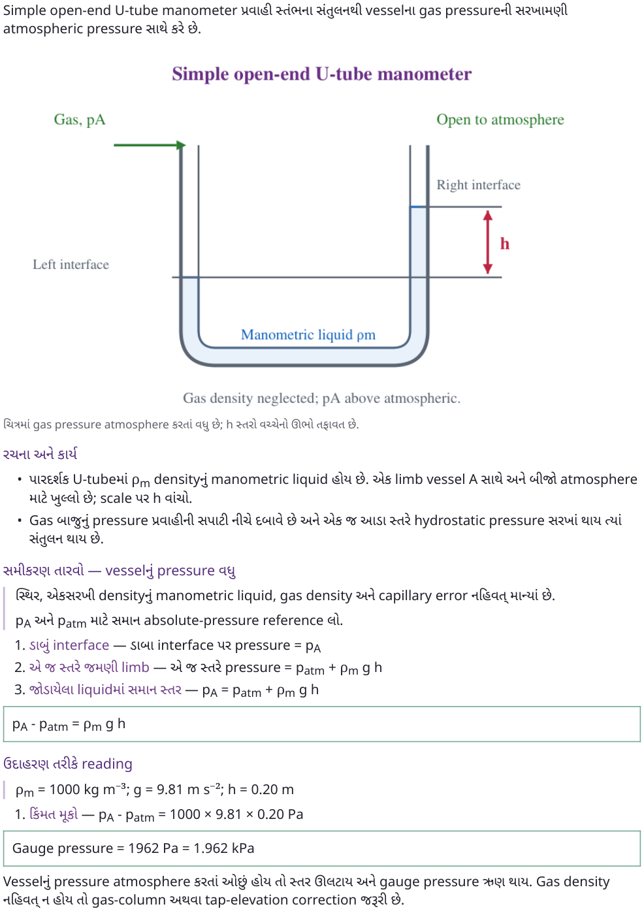
Question 2
Q2 · Pressure, vacuum, separation and NPSH
Q.2 (a) · Define: Static pressure,Dynamic pressure,and Vacuum. · 3 marks
Static pressure p is the local thermodynamic pressure exerted by the fluid, measured in a pipe by a properly aligned wall pressure tap.
Dynamic pressure q represents kinetic energy per unit volume for density ρ and local speed V:
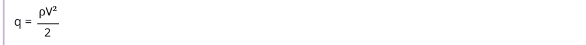
SI unit of p and q: Pa = N m⁻²
Vacuum is pressure below local atmospheric pressure: vacuum = patm − pabs when pabs is lower. It is not negative absolute pressure.
Example: with ρ = 1.2 kg m⁻³ and V = 10 m s⁻¹, q = 60 Pa.
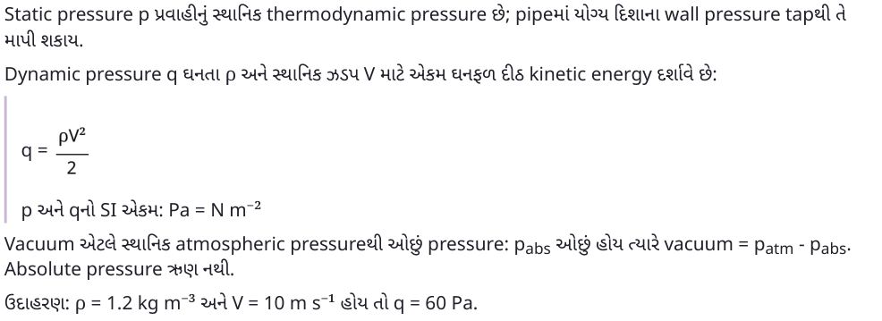
Q.2 (b) · Explain construction and working of liquid ring vacuum pump. · 4 marks
A liquid-ring vacuum pump traps gas in changing-volume cells between rotor blades and a rotating liquid ring.
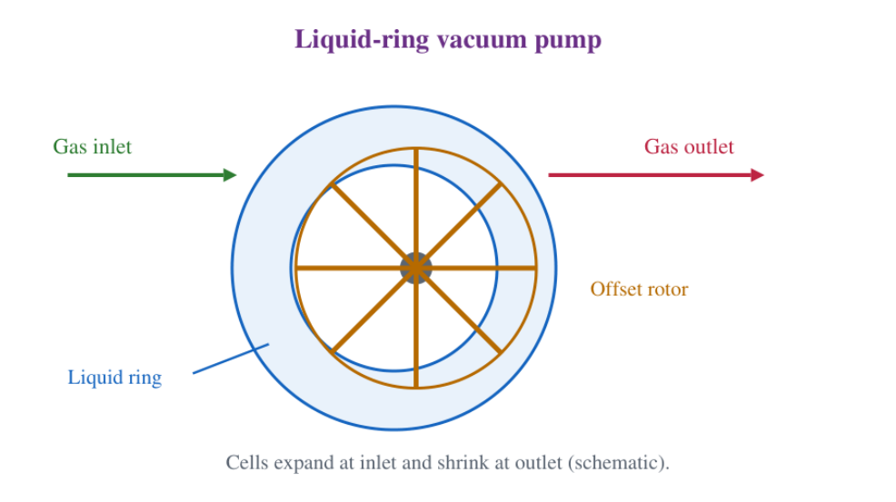
The rotor is eccentric relative to the casing and liquid ring; the illustration is schematic.
Construction and working
1. An eccentric bladed rotor rotates in a casing partly filled with seal liquid, often water; inlet and discharge ports connect to different regions.
2. Rotation throws the liquid toward the casing, forming a ring. Because the rotor is eccentric, the gas spaces between blades change volume.
3. Expanding cells draw gas through the inlet; shrinking cells compress and expel it through the outlet. A separator can recover seal liquid.
Used for wet gas and vacuum service. The seal-liquid vapour pressure limits the achievable vacuum; excess liquid temperature, contamination and seal-liquid supply must be controlled.
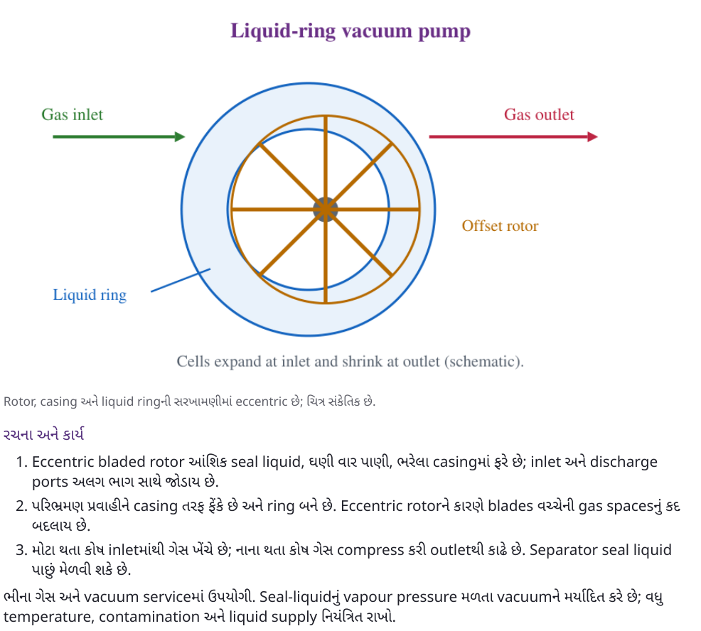
Q.2 (c) · Discuss about Net positive suction head (NPSH) of centrifugal pump considering both reservoir is below and above the pump. · 7 marks
Net positive suction head available (NPSHA) is the liquid’s absolute total head at the pump suction, above its vapour-pressure head.
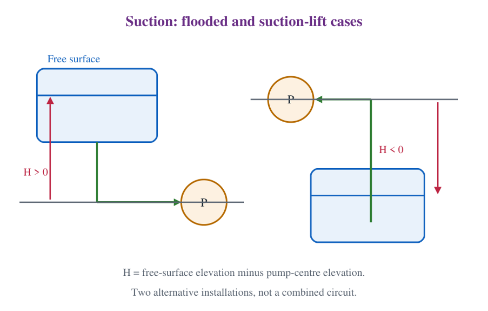
H is positive when the free surface is above the pump and negative when it is below.
Definition at the suction flange
ps,abs is absolute static suction pressure, Vs the mean suction velocity, ρ the liquid density, g gravity and pv absolute vapour pressure at liquid temperature. Heads are expressed in metres of pumped liquid.
From reservoir to pump
Assume steady single-phase liquid, negligible velocity at the reservoir surface and suction losses hf,s. Let H = zsurface − zsuction.
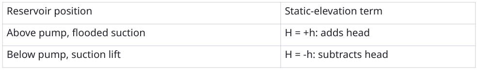
Illustrative comparison, not paper data
Water: p₀ = 101,325 Pa absolute; pv = 2340 Pa absolute
ρ = 1000 kg m⁻³; g = 9.81 m s⁻²; hf,s = 1 m
Surface 2 m above, or alternatively 2 m below, suction datum.
2. Above — NPSHA = 10.09 + 2 − 1 m = 11.09 m
3. Below — NPSHA = 10.09 − 2 − 1 m = 7.09 m
Above: 11.09 m; below: 7.09 m of water
Use absolute pressures, not vacuum gauge values directly. Compare available NPSH with manufacturer NPSHR plus the specified margin; NPSHR is a test criterion and does not guarantee zero cavitation. Larger suction losses or hotter liquid reduce available head.
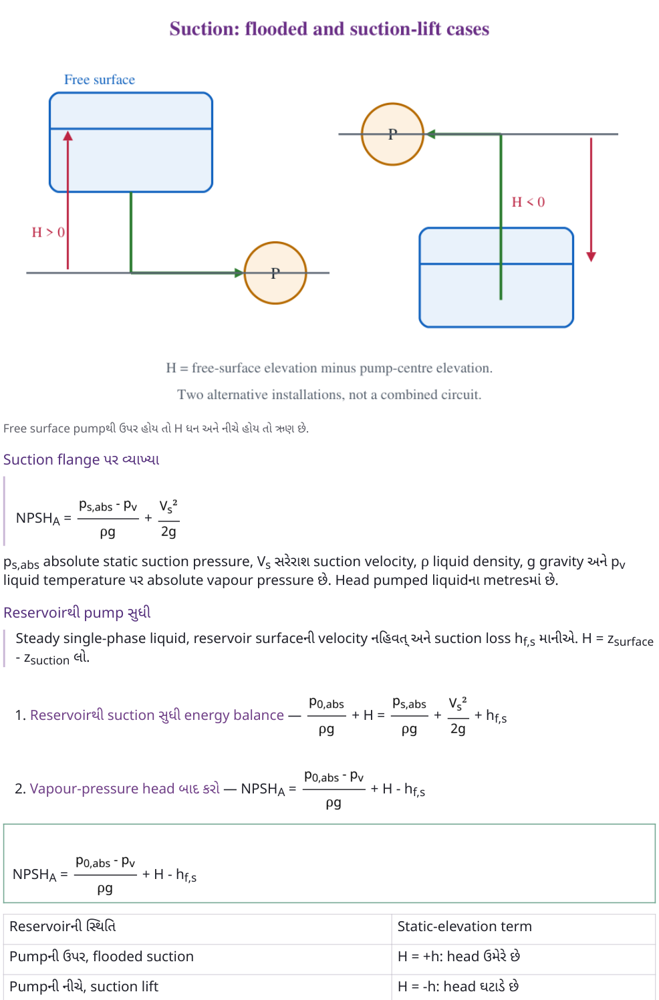
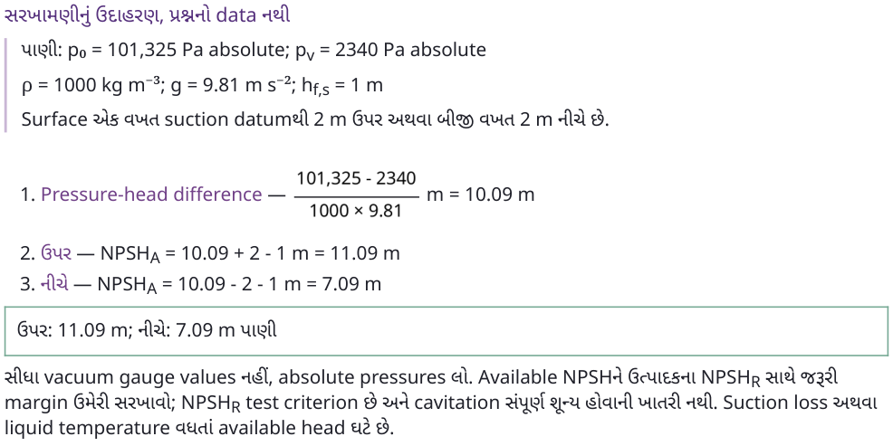
Q.2 (a) · Express pressure distribution in static fluid and Recommend equation to find static pressure. · OR · 3 marks
Hydrostatic pressure is the normal pressure in a fluid at rest. With z upward, force balance on a small element gives:
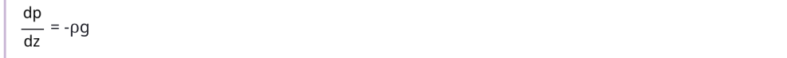
p = psurface + ρgh
• For a constant-density liquid, pressure rises linearly with depth h; points at the same elevation in the same connected resting liquid have equal pressure.
• Example: 10 m below an open water surface, gauge pressure is about 98.1 kPa for ρ = 1000 kg m⁻³ and g = 9.81 m s⁻².
Use absolute surface pressure for absolute p; for gases with appreciably changing density integrate the gradient rather than assuming constant ρ.
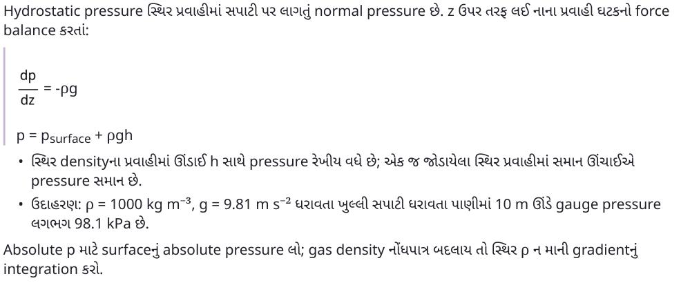
Q.2 (b) · Discuss about continuous gravity decanter. · OR · 4 marks
A continuous gravity decanter separates two immiscible liquids of different density during continuous feed.
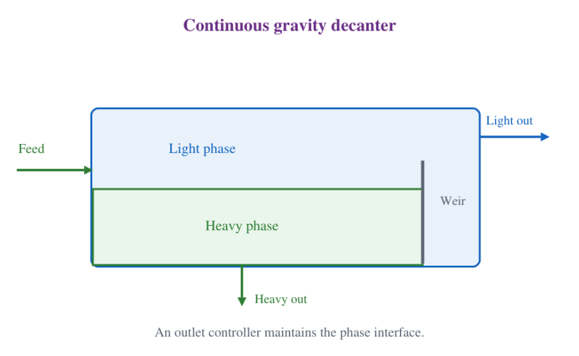
The lighter liquid leaves over the weir; the heavier layer leaves from the bottom. Interface control is schematic.
Construction and working
1. A horizontal vessel provides residence time, with a feed inlet, separate light- and heavy-phase outlets, a weir and interface control.
2. The mixture enters gently. Under gravity the denser liquid settles and the lighter liquid rises; small droplets coalesce.
3. The separated layers leave continuously through their own outlets while the interface controller prevents one phase from escaping with the other.
Example: separating an oil–water mixture before further processing. Stable emulsions, close densities or insufficient residence time reduce separation; a decanter is not a filter.
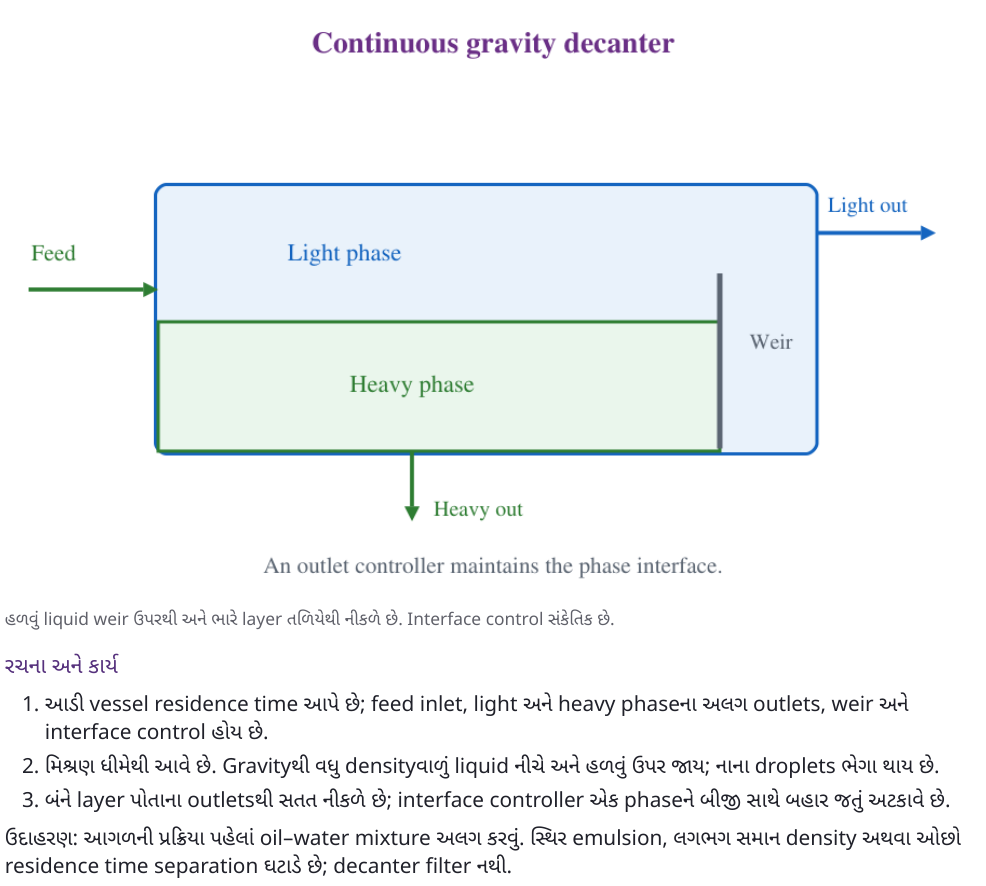
Q.2 (c) · A centrifugal pump draws benzene from an overhead tank. Operating vacuum in the tank is 700 Torr. Vertical distance between free surface of liquid in tank and centerline of pump is 12 m. Maximum operating temperature is 50°C. Vapour pressure of benzene at 50°C is 280 Torr. Density of benzene at 50°C is 870 kg/ m3. Frictional loss in suction line of pump is 1 m of benzene column. Calculate (a) the (NPSH)A of centrifugal pump (b) the (NPSH)A when Vertical distance between free surface of liquid in tank and centerline of pump is 6 m. · OR · 7 marks
Calculate the formal single-phase NPSH available for the two stated reservoir elevations. The physical inconsistency in the stated data is checked below.
Given and assumptions
Tank vacuum = 700 Torr below atmospheric pressure.
Assume local atmospheric pressure = 760 Torr absolute, because it is not specified.
Benzene vapour pressure pv = 280 Torr absolute at 50 °C.
ρ = 870 kg m⁻³; g = 9.81 m s⁻²; suction loss hf,s = 1 m benzene.
Free surface is H = 12 m or 6 m above the pump. Reservoir surface velocity is negligible.
1 Torr = 133.322 Pa; apply the steady single-phase energy balance formally.
Step-by-step calculation
1. Tank absolute pressure — ptank,abs = 760 − 700 = 60 Torr
2. Pressure difference above vapour pressure — Δp = 60 − 280 = −220 Torr
6. First height, H = 12 m — NPSHA = −3.437 + 12 − 1 m = 7.563 m benzene
7. Second height, H = 6 m — NPSHA = −3.437 + 6 − 1 m = 1.563 m benzene
Formal results: 7.563 m benzene at 12 m; 1.563 m benzene at 6 m.
Physical check — important
• The assumed tank absolute pressure of 60 Torr is below the stated 280 Torr equilibrium vapour pressure at 50 °C. A stable 50 °C free liquid surface at 60 Torr is not physically sustainable: benzene would flash or boil until conditions change.
• The positive numbers above are formal substitutions in a single-phase model, not a safe or self- consistent operating prediction. Actual temperature, pressure and phase conditions must be corrected and NPSH recalculated before pump selection.
• A 6 m reduction in static height reduces the formal NPSH by 6 m, providing an arithmetic check. Compare a valid NPSHA against manufacturer NPSHR with margin.
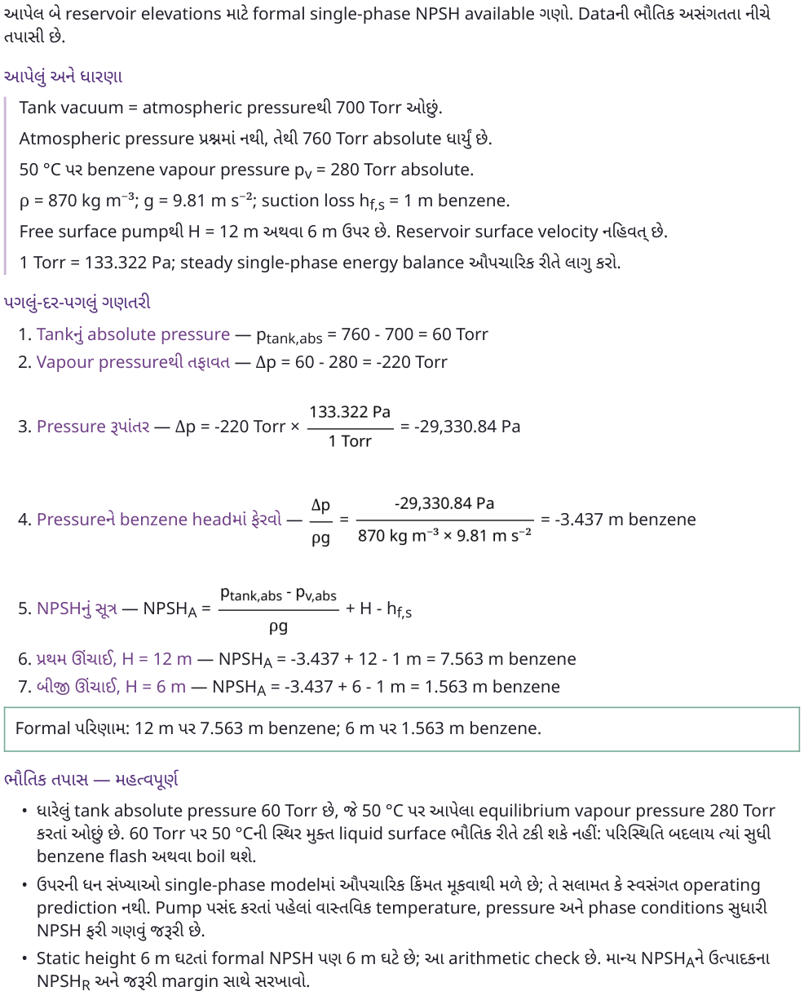
Question 3
Q3 · Flow measurement, friction and conservation laws
Q.3 (a) · Classify flow measuring devices. · 3 marks
Flowmeters measure volume flow, mass flow, or a quantity from which flow is inferred.
• Differential pressure: venturi, orifice and pitot tube use a pressure difference.
• Variable area: rotameter uses float position; velocity: electromagnetic, turbine or ultrasonic meters sense velocity.
• Positive displacement: count known volume increments; mass: Coriolis meters measure mass flow directly.
Example: a venturi is used for a full pipe carrying water. Choose an instrument compatible with the fluid and flow range.
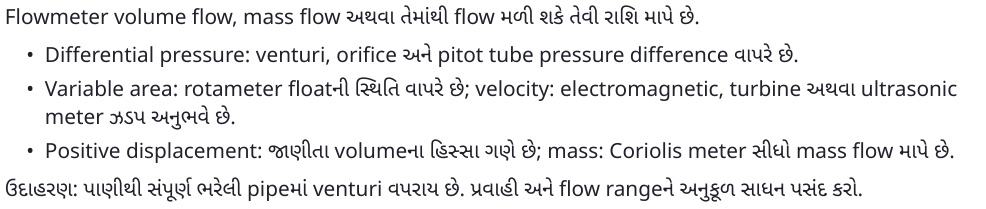
Q.3 (b) · Describe Magnetic flow meter. · 4 marks
An electromagnetic flowmeter uses Faraday’s law: a conducting fluid moving across a magnetic field induces a voltage between electrodes.
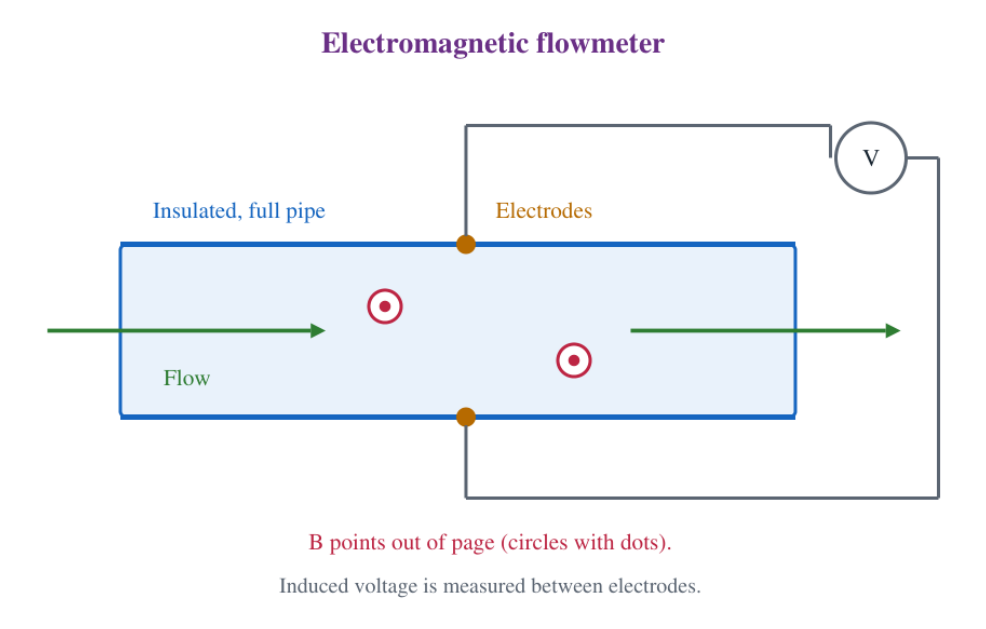
Flow, magnetic field and electrode direction are mutually perpendicular; dots denote field out of the page.
E = k B D V
Q = A V
• A magnetic field B crosses a full, electrically lined pipe. Electrodes separated by distance D sense voltage E; the transmitter converts calibrated mean velocity V to volume flow Q.
• k depends on geometry and calibration. With the field fixed, voltage is proportional to velocity. Example: wastewater or a conductive chemical solution.
The fluid must have sufficient electrical conductivity and the pipe must remain full. Nonconductive oil or gas is unsuitable; coated electrodes can cause error.

Q.3 (c) · Derive Bernoulli’s equation. · 7 marks
Bernoulli’s equation expresses mechanical-energy conservation along a streamline: pressure, velocity and elevation head can exchange.
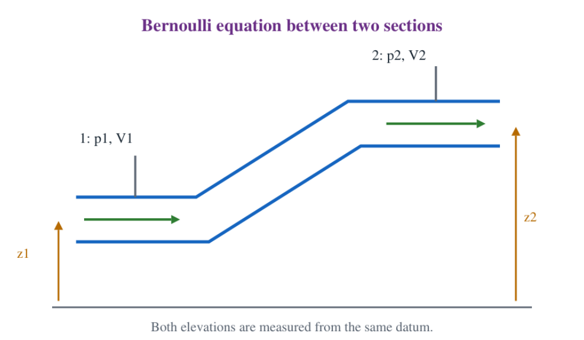
Sections 1 and 2 are on a streamline; elevations use the same datum.
Assumptions
• Steady flow of constant-density incompressible fluid; inviscid along the streamline; gravity is the only body force.
• No pump, turbine or heat-driven mechanical-energy addition between the sections. p is static pressure and V local speed; use a consistent pressure reference.
Derivation
1. Force balance on a fluid element along the streamline — dp + ρ V dV + ρ g dz = 0


Illustrative head at one section
Water: ρ = 1000 kg m⁻³, g = 9.81 m s⁻²
p = 98,100 Pa; V = 1.4 m s⁻¹; z = 2.0 m
3. Add heads — 10.00 m + 0.10 m + 2.00 m = 12.10 m
Total head ≈ 12.10 m
The units are metres of the flowing liquid. Real pipe systems require loss and pump/turbine terms; using section-average velocity may require kinetic-energy correction factors.
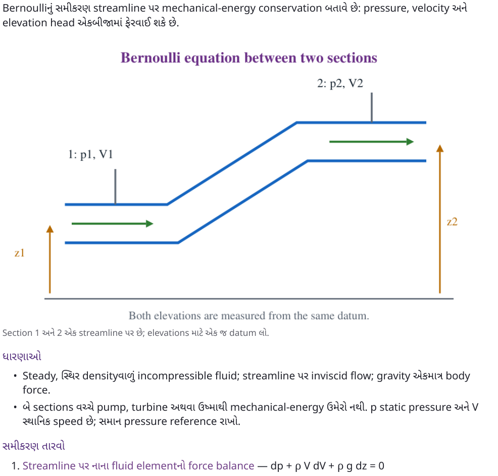

Q.3 (a) · Compare Compressible and Incompressible fluid. · OR · 3 marks
Compressibility describes how much density changes when pressure changes.
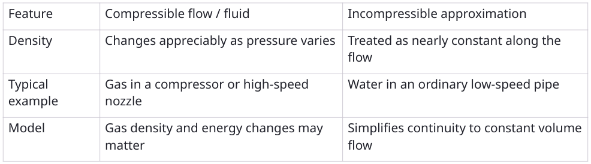
All real fluids are compressible to some degree. A gas may be modelled as incompressible at low speed and small pressure change; a liquid can be compressible in water hammer.

Q.3 (b) · Explain friction factor chart. · OR · 4 marks
The Moody chart relates the Darcy pipe-friction factor fD to Reynolds number and relative roughness.
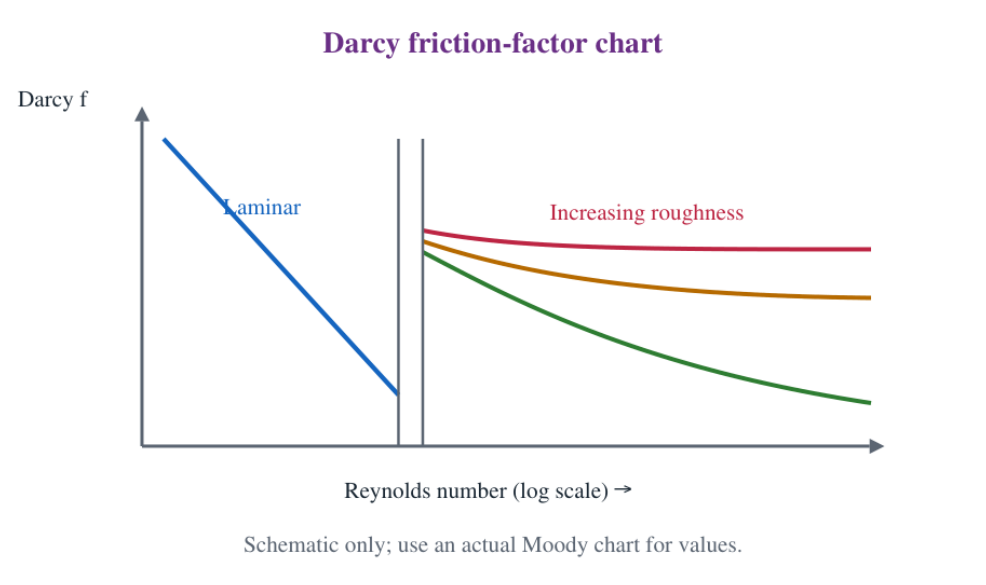
Schematic only: read numerical values from a calibrated Darcy Moody chart.
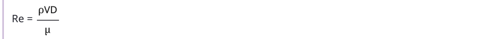
• Calculate Re and relative roughness; locate the curve for the pipe condition and read fD. Turbulent flow depends on both Re and roughness.
• Use the result in the Darcy–Weisbach equation. For example, Re = 1000 gives fD = 0.064 in fully developed laminar flow.
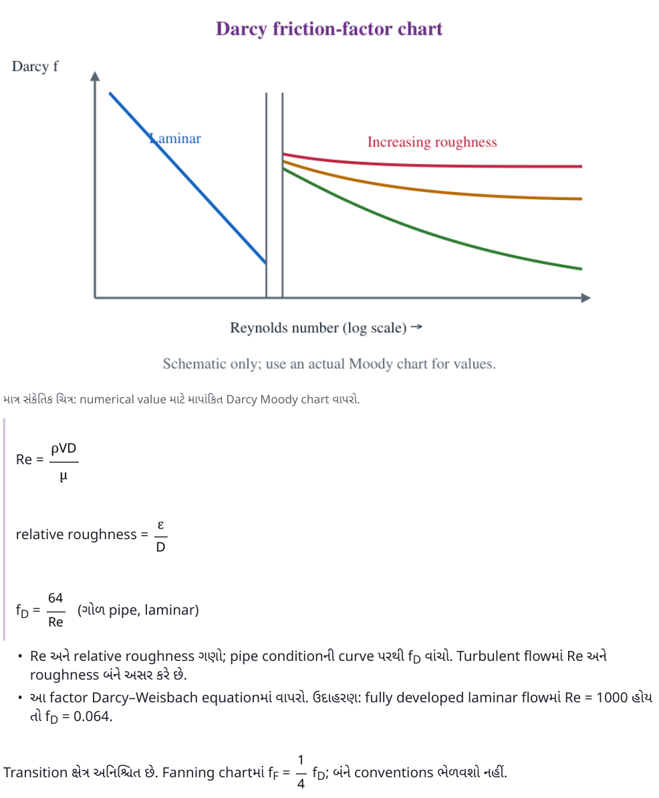
Q.3 (c) · Derive equation of continuity for a steady flow condition. · OR · 7 marks
Continuity is conservation of mass: the mass entering a steady-flow control volume equals the mass leaving it.

An example with a large upstream section and a smaller throat.
Assume one inlet and one outlet, steady flow, no leaks or mass accumulation. V denotes cross- section mean velocity and ρ is uniform at each section.
Derivation
1. Mass per unit time through a section — ṁ = ρ A V
2. Mass balance — ṁin − ṁout = 0
3. Substitute section values — ρ₁ A₁ V₁ = ρ₂ A₂ V₂
ρ₁ A₁ V₁ = ρ₂ A₂ V₂
For constant density, cancel ρ to obtain: Q = A₁ V₁ = A₂ V₂. For compressible flow the full density terms must remain.
Illustrative constant-density flow
A₁ = 0.020 m²; V₁ = 2.0 m s⁻¹; A₂ = 0.010 m²
1. Volume flow — Q = 0.020 × 2.0 m³ s⁻¹ = 0.040 m³ s⁻¹
V₂ = 4.0 m s⁻¹
The smaller section has higher mean velocity; the same volume flows per second. With several ports, sum the mass rates over all inlets and outlets.
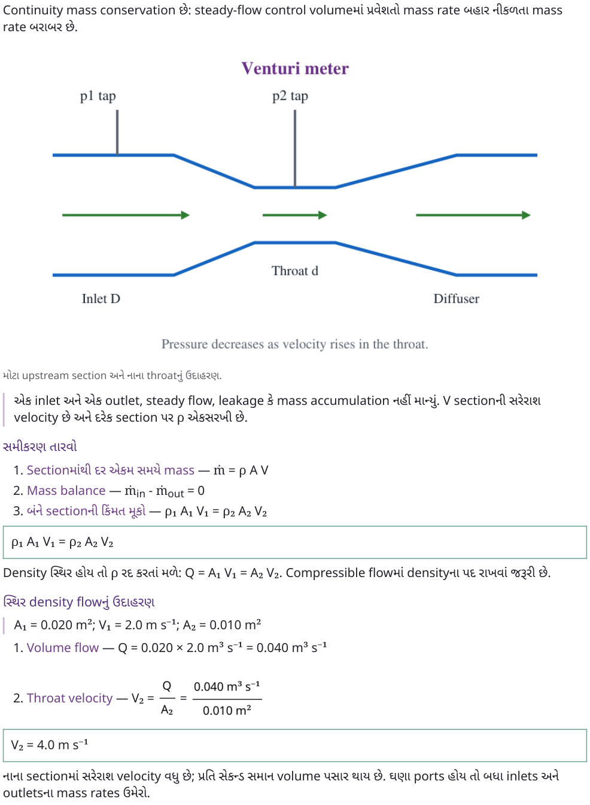
Question 4
Q4 · Velocity, fluidization, rotameter and local losses
Q.4 (a) · Describe average velocity and mass velocity. · 3 marks
Average velocity V is volume flow rate divided by cross-sectional area A; mass velocity G is mass flow rate per unit area.
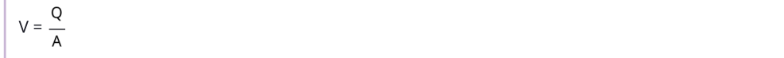
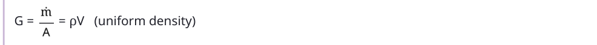
V has unit m s⁻¹; G has unit kg m⁻² s⁻¹. For water at ρ = 1000 kg m⁻³ and V = 2 m s⁻¹, G = 2000 kg m⁻² s⁻¹. G is mass flux, not another velocity.
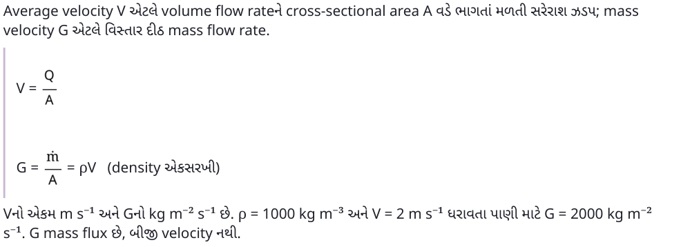
Q.4 (b) · Discuss about Minimum fluidization velocity. · 4 marks
Minimum fluidization velocity umf is the superficial upward fluid velocity at which a settled particle bed just begins to become fluidized.
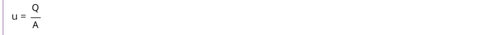
Δpbed,mf A = (ρp − ρf) (1 − εmf) A Lmf g
• Superficial velocity uses the empty-column cross-sectional area A, not the pore area.
• At incipient fluidization the bed pressure force balances the buoyant weight of particles. The relation excludes distributor pressure drop and wall support.
• Particle size, shape and density, fluid density and viscosity affect umf; for example fluid catalytic cracking uses a fluidized catalyst bed.
εmf is the bed void fraction and Lmf the bed height at onset. The relation assumes a uniform bed and negligible particle entrainment.
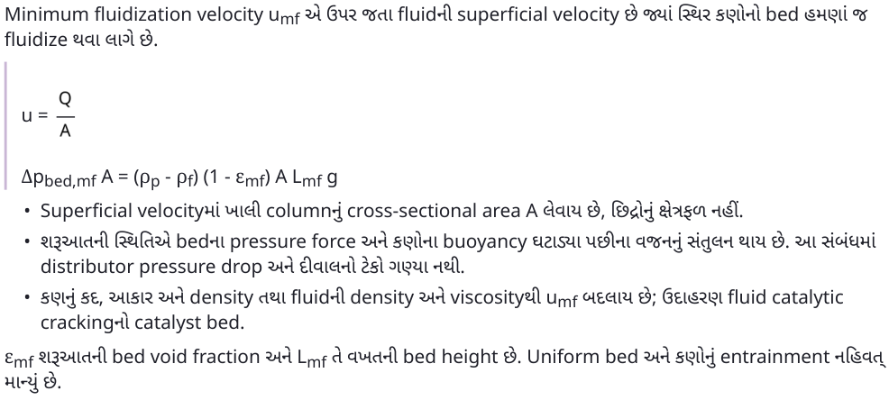
Q.4 (c) · With a labeled diagram explain the principle, construction, and working of rotameter. · 7 marks
A rotameter is a variable-area flowmeter: a float rises in a vertical tapered tube until its weight is balanced by buoyancy and flow drag.
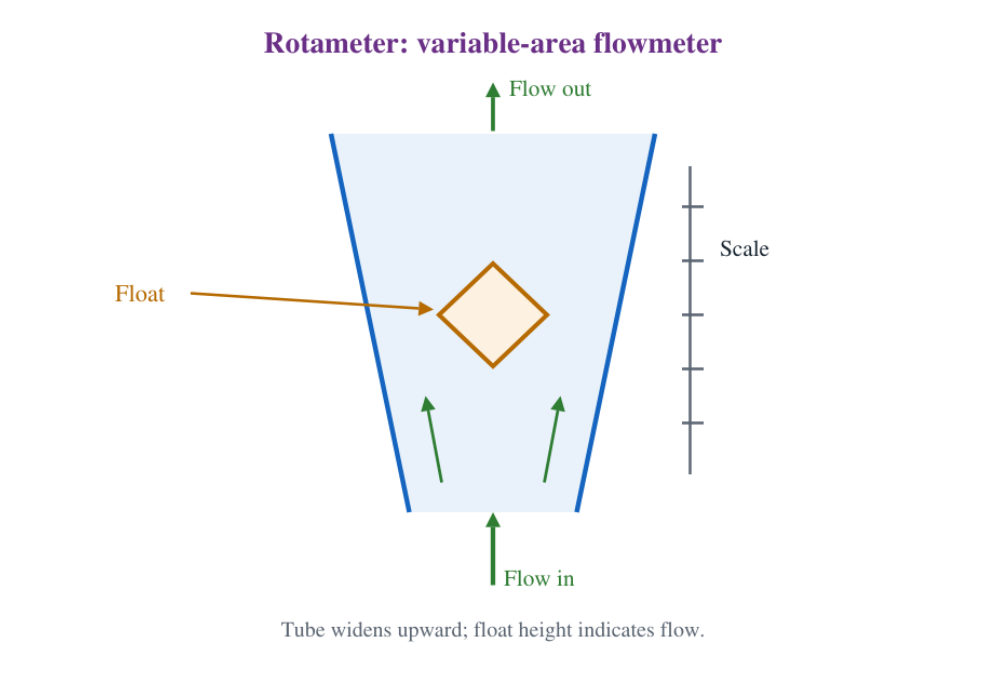
The tube widens upward; the float stabilises where the upward forces balance its weight.
Construction — part and purpose
1. A transparent or otherwise readable tapered tube is mounted vertically, narrow end down. A calibrated scale is marked for a specified fluid and condition.
2. A float moves freely inside the tube. The annular gap around it is the variable flow area; connections admit fluid at the bottom and discharge it at the top.
Working — step and reason
1. Fluid flows upward and exerts buoyancy and drag on the float.
2. If flow increases, the float rises into a wider section. The annular area increases until force balance is restored.
3. Read the flow on the scale at the float’s specified reading edge. The height increases with flow within its calibrated range.
Illustrative force balance
Float weight W = 2.0 N; buoyancy = 0.5 N; steady float
W = Fbuoyancy + Fdrag
1. Rearrange — Fdrag = W − Fbuoyancy 2. Substitute — Fdrag = 2.0 − 0.5 N
Fdrag = 1.5 N
Used for local liquid and gas flow indication. Keep the tube vertical and filled, use the specified float reading edge, and correct calibration for fluid density and viscosity; dirty fluid or a sticking float gives error.
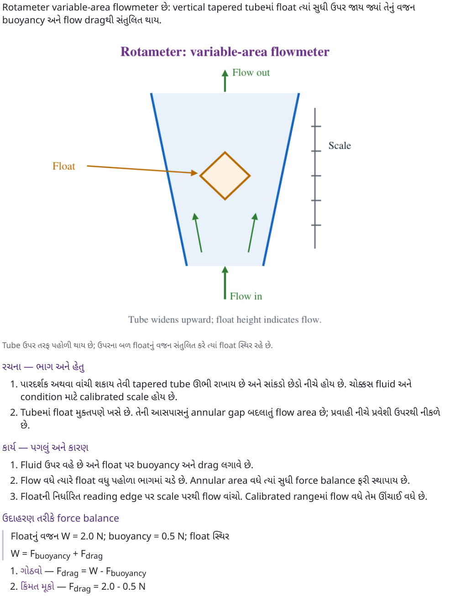
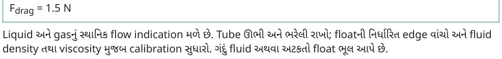
Q.4 (a) · Discuss about drag and drag coefficient. · OR · 3 marks
Drag FD is the force a fluid exerts on a body opposite to the relative motion. It includes pressure drag and viscous drag.
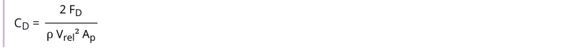
• CD is dimensionless; ρ is fluid density, Vrel relative speed and Ap the specified projected area normal to the flow.
• CD depends on Reynolds number, body shape and orientation; it is undefined at zero relative speed.
• Example: drag opposes a solid sphere settling through a liquid.
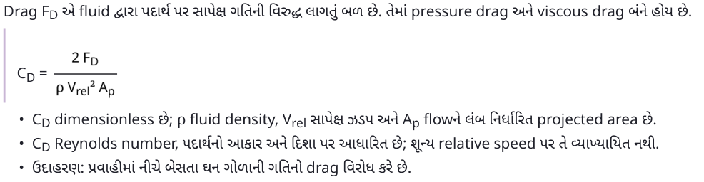
Q.4 (b) · Explain Boundary layer & it’s formation In straight tubes · OR · 4 marks
A boundary layer is the region near a solid wall in which viscosity causes a substantial velocity change from the no-slip wall to the outer flow.
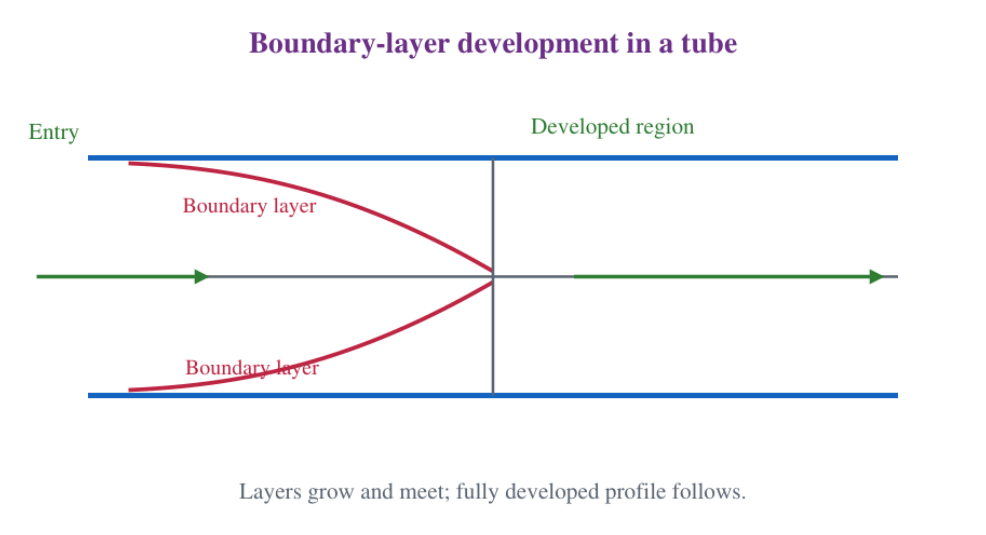
Entrance-region layers grow from both walls and ultimately merge.
Formation in a straight tube
1. Liquid enters a straight tube; at a stationary wall its velocity is zero because of no slip.
2. Viscous action slows neighbouring layers. The affected boundary layer grows along the entrance length while a faster central core remains.
3. Layers from opposite walls meet; farther downstream the velocity profile no longer changes with axial position: the flow is fully developed.
A fully developed laminar Newtonian profile is parabolic, not uniform. At higher Reynolds number the layer and developed flow can be turbulent.
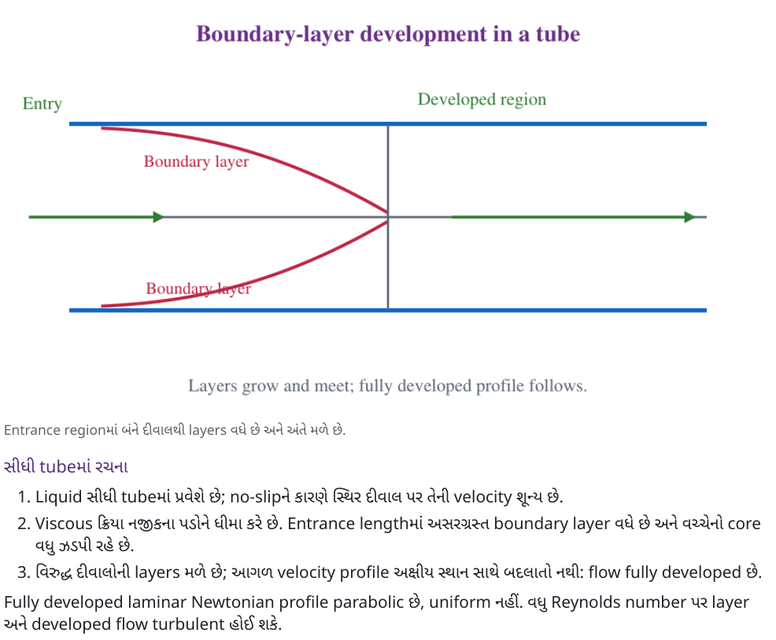
Q.4 (c) · Describe with neat sketch-friction loss due to sudden expansion and sudden contraction of cross section. · OR · 7 marks
A local head loss is the irreversible mechanical-energy loss caused by a fitting or abrupt change of cross-section.
1. Sudden expansion
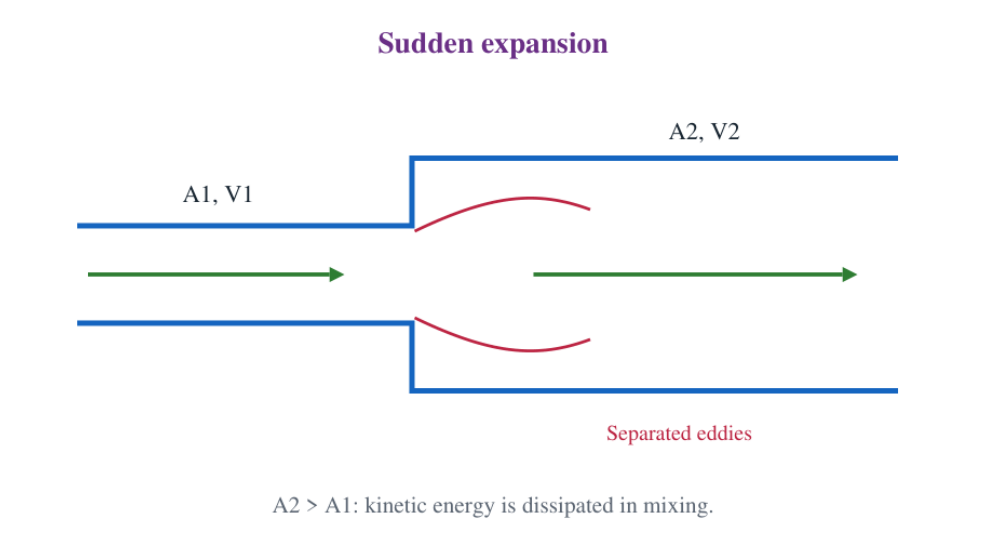
Flow leaves the small pipe and mixes with eddies in the larger section.
The large section has smaller average speed. Separation and mixing dissipate energy. For steady incompressible flow, approximately uniform section velocities and negligible wall loss over the short expansion, continuity plus momentum and energy balances give:
A₁V₁ = A₂V₂

2. Sudden contraction
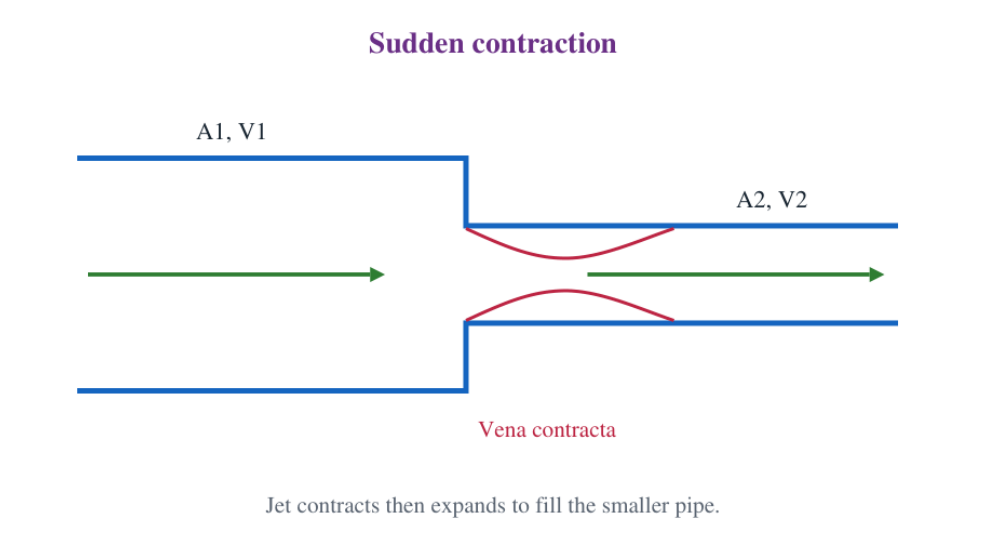
The separated jet narrows to a vena contracta and then re-expands inside the smaller pipe.
At a sharp contraction, streamlines converge beyond the entrance, creating a vena contracta Ac; the jet then expands to fill area A₂ and loses head by mixing.
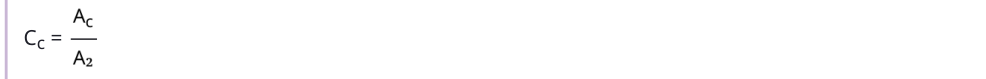
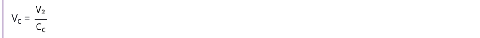
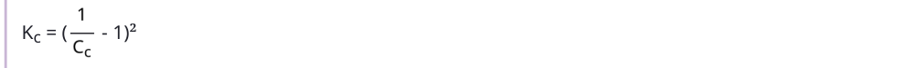
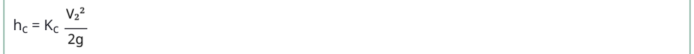
The displayed Kc estimates loss by treating re-expansion from the contracted jet as an ideal sudden expansion; real fittings are better represented by a measured Kc. Reference V₂ is the downstream pipe mean velocity.
Illustrative losses (not printed data)
Expansion: V₁ = 2 m s⁻¹, V₂ = 1 m s⁻¹
Contraction: V₂ = 2 m s⁻¹, Cc = 0.62; g = 9.81 m s⁻²
Expansion ≈ 0.0510 m; contraction ≈ 0.0766 m
These head losses are positive and are not simply the static-pressure difference. Smooth transitions reduce separation; actual K depends on geometry and Reynolds number.
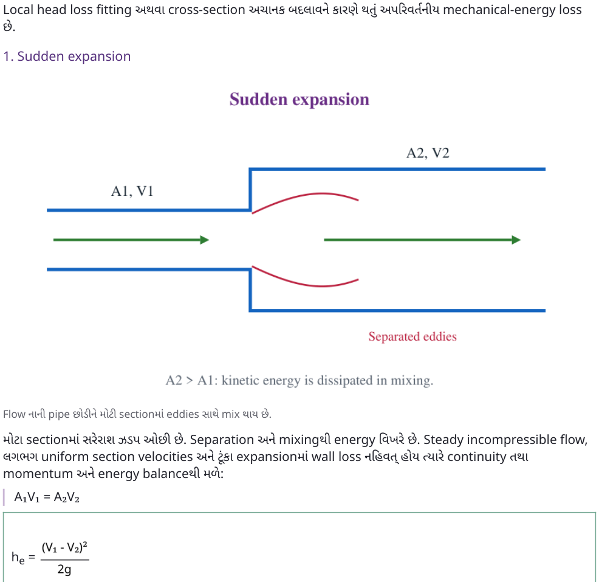
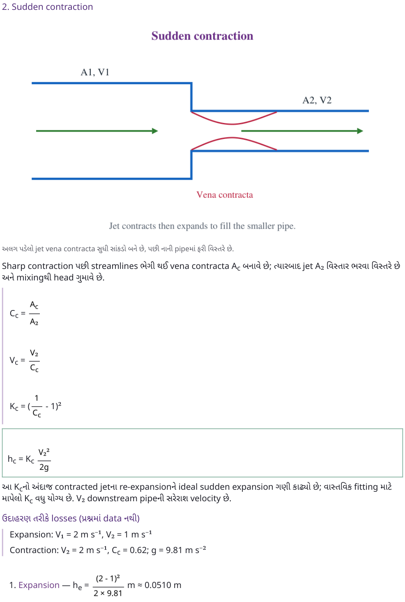
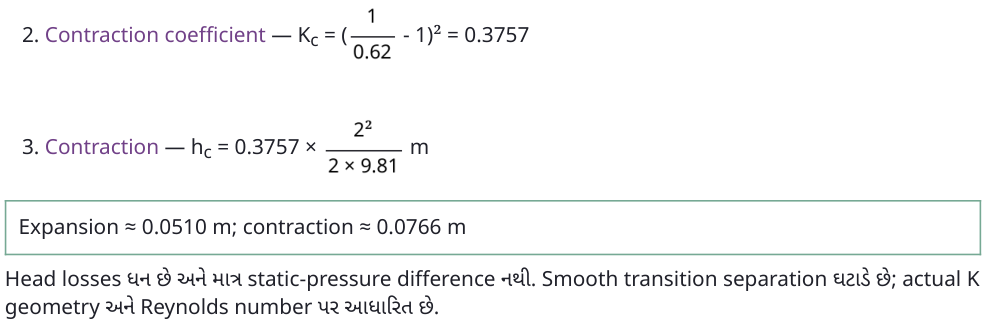
Question 5
Q5 · Fluidization, Reynolds experiment, viscosity and flowmeters
Q.5 (a) · List out industrial applications of fluidization. · 3 marks
Fluidization suspends a bed of solid particles in an upward fluid stream so that the bed behaves much like a fluid.
• Fluid catalytic cracking and catalytic reaction with good mixing.
• Drying granules in a fluidized-bed dryer.
• Combustion or gasification of solid fuels.
• Roasting ores, coating particles and controlled heat treatment.
Example: hot air can dry wet pharmaceutical granules. Excessive velocity can entrain particles, so a separator may be necessary.
Q.5 (b) · Describe Reynolds experiment in detail. · 4 marks
Reynolds’ experiment visualises the transition from orderly to mixed flow in a pipe using a thin dye streak.
A constant-head tank supplies a glass tube; a fine dye jet enters along the tube axis.
Apparatus and observations
1. A constant-head water tank feeds a transparent straight pipe; a valve controls flow. A small dye reservoir injects dye gently near the tube entrance.
2. At low flow the dye remains a nearly straight streak: laminar layers move with little transverse mixing.
3. Increase the valve opening: the streak becomes unsteady in transition, then spreads across the tube in turbulent flow.
ρ is fluid density, V is average pipe velocity, D is internal diameter and μ is dynamic viscosity. In ordinary pipe flow, Re below about 2300 is normally laminar, 2300–4000 is transitional, and above about 4000 is usually turbulent. The exact onset depends on disturbance and inlet conditions.
Q.5 (c) · Explain principle,construction and working of Venturi meter. · 7 marks
A venturi meter measures pipe flow from the pressure difference caused by acceleration through a converging throat; it uses continuity and Bernoulli’s principle.
Taps compare the upstream pressure with the lower pressure at the throat.
Construction — part and purpose
1. An upstream cylindrical inlet connects to a smooth converging section and a short, smaller- diameter throat.
2. A gradually diverging diffuser recovers part of the pressure. Pressure taps at the inlet and throat connect to a differential-pressure instrument.
Working — step and reason
1. In a full pipe, liquid accelerates as the area decreases; for a horizontal meter the static pressure falls at the throat.
2. Measure Δp between the two taps. Compute ideal flow from continuity and Bernoulli; apply the calibrated discharge coefficient Cd for actual flow.
3. The diffuser slows the liquid and recovers much of the pressure, although some energy is irreversibly lost.
A₂ is throat area, ρ liquid density, d throat diameter and D inlet diameter. The shown relation assumes steady incompressible flow, a horizontal meter, uniform-section velocities and an appropriate Cd.
Illustrative flow (not paper data)
A₂ = 0.002 m²; β = 0.50; ρ = 1000 kg m⁻³
Δp = 9375 Pa; Cd = 0.98
2. Correct for actual flow — Q = 0.98 × 0.002 m² × 4.472 m s⁻¹
Q ≈ 0.00877 m³ s⁻¹
Useful for clean or suitably selected process liquids with relatively low permanent pressure loss; it is bulkier and costlier than an orifice plate. Cavitation and installation requirements must be checked.
Q.5 (a) · State and explain Newton’s law of viscosity. · OR · 3 marks
Newton’s law of viscosity: for simple shear, shear stress τ is proportional to the velocity gradient normal to the layers.
τ in Pa; μ in Pa s; velocity gradient in s⁻¹
• μ is the dynamic viscosity and is constant with shear rate for a Newtonian fluid at fixed conditions.
• Example: μ = 0.001 Pa s and gradient = 10 s⁻¹ give τ = 0.01 Pa.
The sign of shear depends on the chosen coordinate and stress convention; the example uses magnitudes.
Q.5 (b) · Distinguish Newtonian and Non-Newtonian fluid. · OR · 4 marks
pressure.

For example, many paints shear-thin. Viscosity can also change with temperature even in a Newtonian fluid.
Q.5 (c) · Obtain equation of discharge flow rate through Orifice meter. · OR · 7 marks
Orifice meter infers volume flow from the pressure difference created by a restriction.

A sharp-edged plate restricts flow; tap positions must match the calibration.
Assumptions and definitions
Steady incompressible single-phase flow in a full horizontal pipe; ρ is constant and p₁ > p₂.
A₁ and D are upstream area and diameter; A₂ and d are throat or orifice area and diameter. V₁ and V₂ are ideal section-mean velocities.
Derivation


5. Ideal volume flow — Qideal = A₂ V₂
6. Calibrate real flow — Q = Cd Qideal

In a real orifice the jet contracts to a vena contracta and loses energy. Cd accounts for these effects and the specified pressure-tap geometry; do not treat it as a universal constant.
Illustrative calculation (not printed data)
A₂ = 0.002 m²; β = 0.50; ρ = 1000 kg m⁻³
Δp = 9375 Pa; illustrative Cd = 0.62

2. Actual volume flow — Q = 0.62 × 0.002 m² × 4.472 m s⁻¹
Q ≈ 0.00555 m³ s⁻¹
The unit is volume per time. Use a measured Cd for the meter and tap arrangement; for unequal elevations use the corrected pressure head. Compressible gases may require an expansion factor.